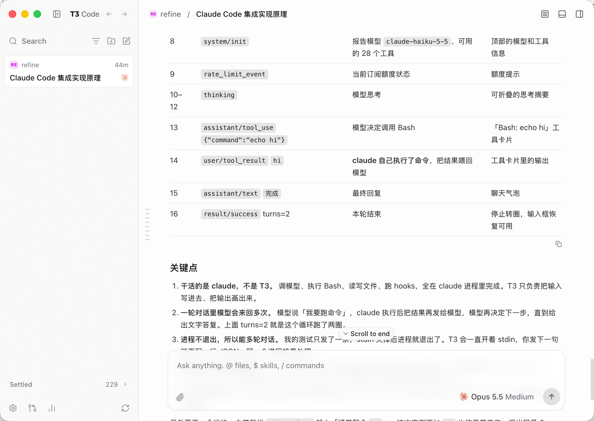

工作空间/这个诊断的 ui 感觉很丑啊
需要你 2 ›
这个诊断的 ui 感觉很丑啊标签命名＋
❯ claude
● 我先看一下诊断面板的布局代码……
Read crates/keepline-app/src/workbench/diagnostics.rs
诊断页现在三栏挤在一起，标题字重太粗，额度条和日志抢视线。
只改 next/ 原生 App 的窗口顶部和左栏顶部，终端、标签和看板都不动。虚线框是这次要改的地方。挑一个方向我再在真 App 里做，也可以混着要，比如「A，但不加前进后退」。

Keepline 现在：一条贯穿整个窗口的顶栏，从左到右是 收起左栏、图标、Keepline / 工作空间、「▦ 鸟瞰全部」「搜索」等带框文字按钮、「＋ 新待办」；左栏在顶栏下面。收起左栏按钮已经有了，但它和 T3 的差别在于位置归属和周围的东西。
去掉贯穿的顶栏。左栏从顶上开始，红绿灯后面是 收起左栏 · Keepline · ← →；下面一行是搜索（⌘K）加「筛选、新待办、新终端」三个图标。正文区自己有一行：左边「工作空间 / 当前会话」，右边「需要你」提示和鸟瞰、手机图标。设置、额度放到左栏底部一排。
结构不动，左栏还在顶栏下面。左上角换成 T3 那组：收起左栏 · Keepline · ← →，去掉小图标和「/ 工作空间」（工作空间挪到正中当面包屑）。右边带框文字按钮全换成灰色细线图标，只留「需要你」一个有颜色的提示。改动最小。
左栏整列消失，收起左栏 · ← → 留在红绿灯后面浮着，面包屑接在它们后面。这就是 T3 收起时的做法：按钮永远在同一个位置，点一下就回来，不会跳。
| ← → | Keepline 现在没有前进后退。要加的话记的是「去过的页面」：切空间、切标签、进出鸟瞰、打开待办详情，⌘[ / ⌘] 也能用。不要就只留收起左栏和 Keepline。 |
| 小图标 | A、B 都去掉了 Keepline 前面那个可点的小图标（点它换 App 图标）。换图标挪进设置。介意的话可以留着。 |
| 「＋ 新待办」 | A 里变成搜索行右边的图标，B 里是顶栏右边最后一个图标，都不再是带字按钮。 |
| 工作空间切换 | A 里点面包屑的「工作空间」切换；B 保持左栏顶上的「工作空间 ▾」。 |